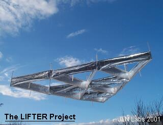
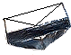
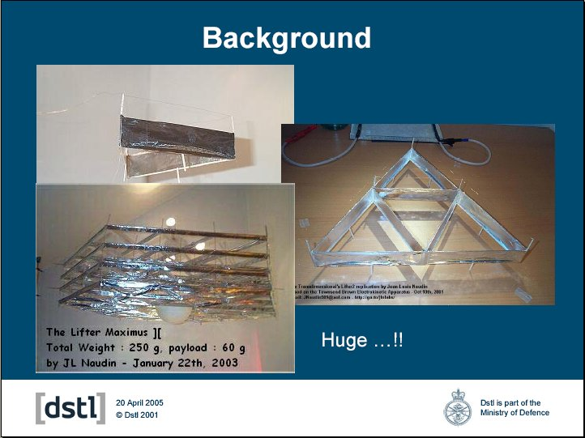

The story of the
Lifter Project
By Jean-Louis
Naudin
Project started on
October 10th, 2001 - JLN Labs
All informations in this page are published free and
are intended for private/educational purposes and not for
commercial applications
Toutes les informations et schémas sont publiés
gratuitement ( freeware ) et sont destinés à un usage personnel
et non commercial

The Lifter uses the Biefeld-Brown
effect discovered by Thomas Townsend Brown in
1928. The basic design of the Lifter has been fully described in
the Townsend Brown US Patent N°2949550 filed on Aug 16, 1960
and titled "Elektrokinetic Apparatus", you
will find in this patent the full description of the main
principle used in the Lifter devices :
<< It is therefore an object of my
invention to provide an apparatus for converting the energy of an
electrical potential directly into a mechanical force suitable
for causing relative motion between a structure and the
surrounding medium. It is another object of this invention to
provide a novel apparatus for converting and electrical potential
directly to usable kinetic energy.
It is another object of this invention to provide a novel
apparatus for converting electrostatic energy directly into
kinetic energy.
It is another object of this invention to provide a vehicle
motivated by electrostatic energy without the use of moving
parts.
It is still another object of this invention to provide a self-
propelled vehicle without moving parts. It is a feature of my
invention to provide an apparatus for producing relative motion
between a structure and the surrounding medium which apparatus
includes a pair of electrodes of appropriate form held in fixed
spaced relation to each other and immersed in a dielectric medium
and oppositely charged. It is another feature of my invention to
provide apparatus which includes a body defining one electrode,
another separate electrode supported in fixed spaced relation by
said body, and a source of high electrical potential connected
between the body and the separate electrode. >> (
Extract from US Patent N°2949550 filed on Aug 16, 1960 titled
"Elektrokinetic Apparatus" )
On October 5, 2000, the Hector Serrano's patent WO 00/58623 " Propulsion device and method employing electric fields for producing thrust " has been granted. This patent is very close to the Aymmetrical Capacitor Thruster ( ACT ) patented by the NASA ( patent US 6,317,310 , granted on Nov 2001 ) . These two devices use the Biefeld-Brown Effect for producing a thrust Vs the surrounding medium ( this effect was discovered by Townsend Brown in 1928 in his Gravitator, see the GB Patent N°300311 filed on Nov 15, 1928 "A method of and an apparatus or machine for producing force or motion" from T.Townsend Brown ).
On June 2001, Transdimensional Technologies has presented the Power3 Lifter1 and Lifter2 devices. The Lifter1 device was built with three capacitors joined so as to form a triangle assembly and the Lifter2 is three time heavier and three time bigger than the Lifter1. These devices are able to lift their own weight and they are a "modern version" of the Townsend Brown Electrokinetic Apparatus. The Lifters are using the Biefeld-Brown Effect to generate the main thrust to self levitate.
On October 2001, I have replicated successfully the Transdimensional Power3 Lifter1 and Lifter2. You will also find the full explanations to build yourself your own Lifter1.
On November 13, 2001, the
NASA patent US 6,317,310 " Apparatus and
Method for generating a thrust using a two dimensional
asymmetrical capacitor module " has
been granted.
On the NASA TechFinder web site
( Public Release Date : Nov 6, 2001 ), we can read :
<< Objective : NASA
scientists have discovered a method for generating thrust from
two dimensional asymmetrical capacitor modules. The results are
potentially greater efficiencies and improved reliability over
currently available electric thrusters.
Description : In the
past, inductive technology has been needed to create thrust,
rotational motion, or step an actuator using electricity. This
new technology accomplishes these tasks and more by using high
potential, low current asymmetrical capacitor modules. The
dielectric material of a capacitor under high voltage experiences
a force. Based on the geometry of the capacitor, its material
properties, and ambient conditions, the force can be predicted
and utilized to move the entire capacitor and its mounting in a
predictable direction. It had been theorized that thrust
generation from this phenomenon was feasible, but no working
prototypes had been developed, until now. >> ( Click here to read the full document
)
On November 18, 2001, I have fully replicated and tested successfully the NASA Two Dimensional Asymmetrical Capacitor Thruster experiment.
On January 19, 2002, I have fully replicated and tested successfully the Electric Field Propulsion Thruster patented by Hector Serrano from Gravitec Inc.
Recently, the two new NASA patents based on the Biefeld-Brown effect has been granted US2002012221 on January 31, 2002 and US6411493 on June 25, 2002.
On March 10th, 2002, I have fully replicated and tested successfully the NASA Orbital Maneuvering Propellantless Truster v1.0 described in the patent application US2002012221 " Apparatus and Method for generating a thrust using a two dimensional asymmetrical capacitor module ".
The Lifter is not a simple ionic wind device as Seversky's Ionocraft or as the Hagen's Flying apparatus. The Lifter uses a special asymmetrical capacitor geometry to produce an asymmetrical flow of EM energy around itself. The Biefeld-Brown Effect has been tested successfully in vacuum at 10e-5 torr by the Purdue University - Energy Conversion Lab with accurate and deep measurements in Sep 2000. These tests have fully demonstrated that the ionic wind is not the source of the main thrust.... Today, after some deep investigations and many experiments, I am really convinced that this technology is worth to be developped. In atmospherical environment the major upward thrust is provided by an electrokinetic effect on the medium ( air ), but there is also a minor thrust ( not yet fully explained ) in vacuum which can't be explained by a simple ion wind effect, this residual thrust ( in a milli-Newton range ) can be used in deep space for space propulsion ...
More than 100 Lifter replications have been done successfully by many experimenters and physicists Worldwide ( see The Worldwide Lifters replications logbook ).
On November 12th, 2002, I have fully demonstrated with the Lifter "Maximus" experiment, that a Lifter can be scaled up and also that such a device is able to lift up to 60 g of payload ( total weight : 194 g ). It is now possible to build a VTOL craft which will use the Biefeld-Brown effect to fly silently and without moving parts ( see VTOL Lifter-Craft Mk III ) only powered by electrical energy...

The Lifter
has been fully tested by the [dstl], a part of the British
Ministry of Defence
Documents and references :
| The NASA
PATENT: US6411493 granted
on June 25, 2002 Field of
Invention : The NASA PATENT: US2002012221 granted on January 31, 2002 Apparatus
for generating thrust using a two dimensional,
asymmetrical capacitor module At page 2 chapter [0034]
<<Referring to the Fig 1.... a cylinder 12 made
of copper or another highly conductive material. >> See the tests of the NASA Orbital
Maneuvering Propellantless Truster v1.0
This paper can be downloaded at : http://users.erols.com/iri/Loder.PDF |
| LORENTZ FORCE PROPULSION
SYSTEM Patent
Number: WO02073218 Click here to see the full patent Note from JL Naudin : In the Jeffery Cameron's patent from Transdimensional Technologies, all the theoretical part about the " Lorentz force propulsion system " working principle ( see pages 1-7 ) is fully inspired from the document " Review of the application of Newton's third law in physics " from Patrick Cornille published in 1998 in the Elsevier Science " Progress in Energy and Combustion Science " - Vol 25 ( issue 2 - April 1998 ), see chapter 9.1, pages 173-177 : The Lorentz force law and the stimulated force. |
 Email : JNaudin509@aol.com
Email : JNaudin509@aol.com
Return to the Lifter Project home page